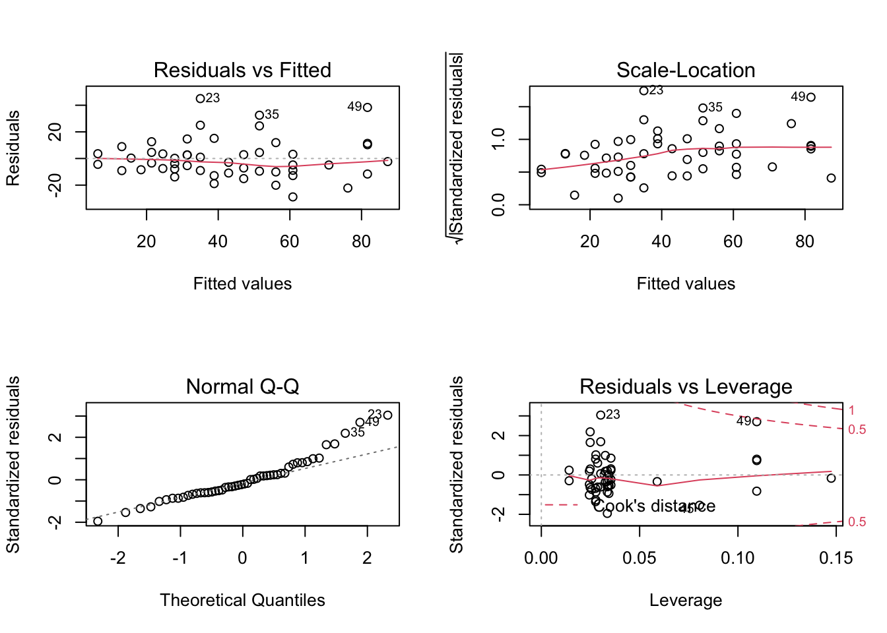
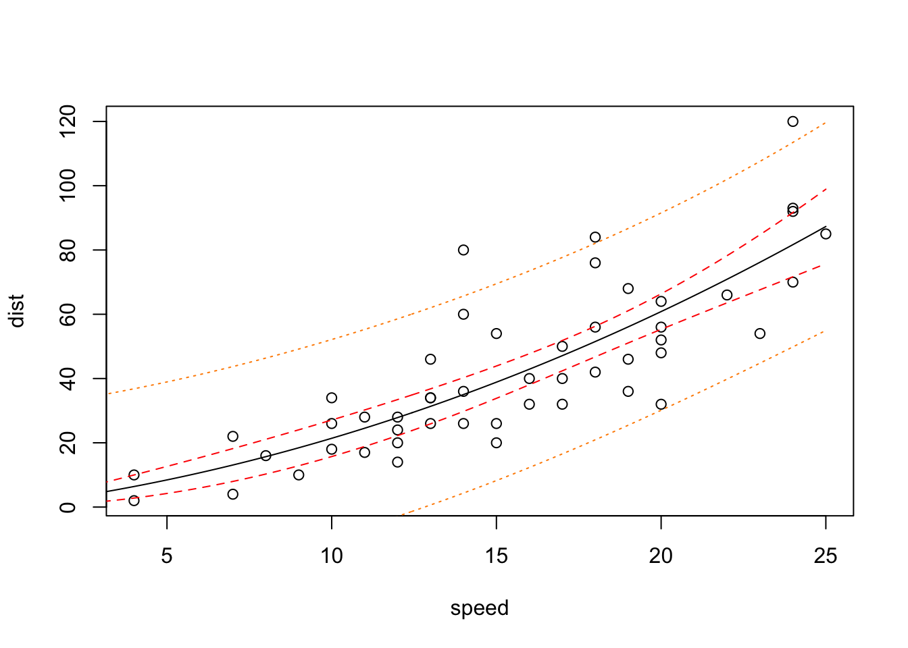
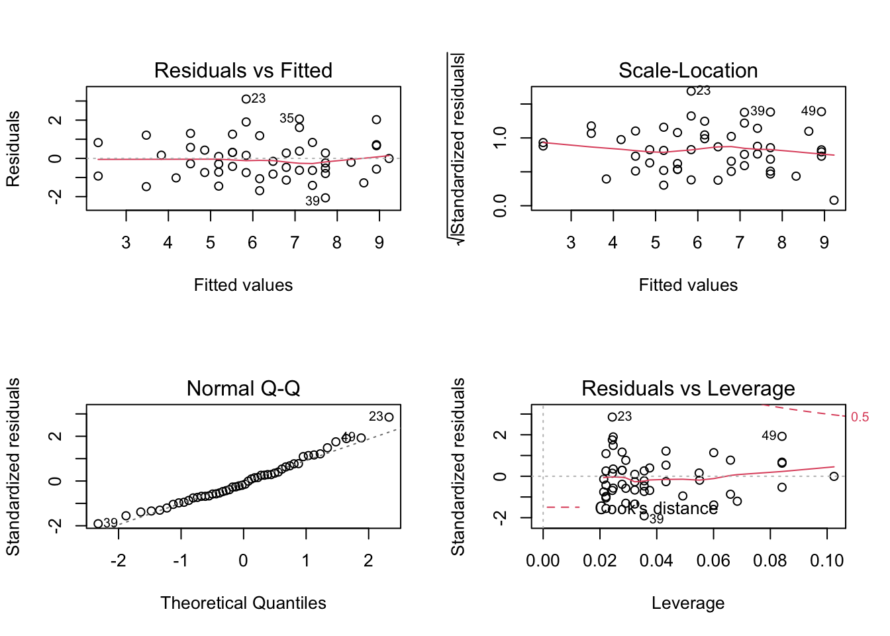
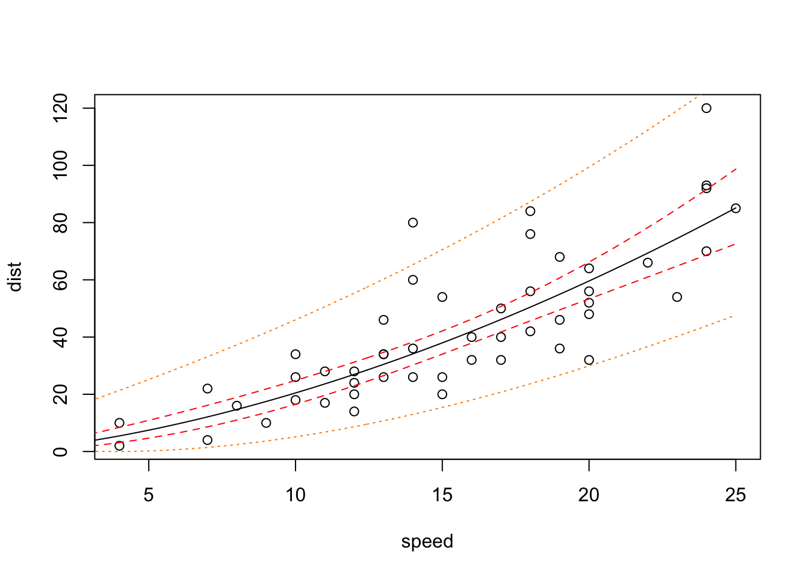
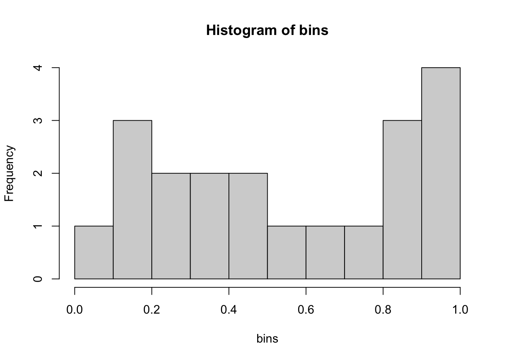

7 Validating the model’s distributional form
Assuming a form of distribution for the data is not only about allowing the model estimation software to run. It it also necessary before we can create confidence intervals for our predictions. First we will posit a particular distribution for the responses, and then we will validate it. The validation step means that we will reject the posited distribution if it doesn’t agree with the observed data.
7.1 Posit a distribution
Recall that we already did this for the examples. This work proceeds by intuition gained through experience, but is often not particularly difficult. We already talked about the allowable range of the responses, and how to interpret those for the mean.
7.2 Validate your choice
Compare the difference between the predicted and observed values to what you assume you would see, based on the posited distribution. Let’s look at the examples.
7.2.1 Stopping distance
I’ve said that the stopping distance example should use a normal distribution, so let’s look now to see how well the model matches that distribution. Now we can look at the in-sample error distribution as well as the out-of-sample error distribution, since unlike the mean, the linear assumption doesn’t enforce the response distribution.
# estimate a model for stopping distance
stop = lm( dist ~ speed + I(speed^2) + 0, data=cars )
# plot the four diagnostic plots on a 2x2 grid:
layout(matrix(1:4, 2, 2))
plot(stop)
# plot the best fit line and confidence/predictive intervals
## to begin, define the inputs for the annotations
xx = data.frame( speed=seq(0, 25, length.out=200) )
## now plot the data points
plot(cars)
## add the best-fit line
lines(xx$speed, predict(stop, xx))
## add lines to show the confidence interval for the best-fit line
lines(xx$speed, predict(stop, xx, interval="confidence")[, 2], lty=2, col='red')
lines(xx$speed, predict(stop, xx, interval="confidence")[, 3], lty=2, col='red')
## add lines to show a prediction interval for new data points
lines(xx$speed, predict(stop, xx, interval="prediction")[, 2], lty=3, col='darkorange')
lines(xx$speed, predict(stop, xx, interval="prediction")[, 3], lty=3, col='darkorange')
The plot reveals obvious problems: the prediction intervals include negative distances, and it doesn’t account for the pattern where the stopping distances are more variable at greater speeds. So, the distribution assumed by the model doesn’t match the distribution of the data.
One way of addressing these problems is to implement a transformation that will make the relationship linear. Either a log or a square root transformation would work here, and the square root fits better with the model form that we’ve assumed. So let’s implement it:
# take the square root of both sides of the model formula
stop_xfrm = lm( sqrt(dist) ~ sqrt(speed) + speed + 0, data=cars )
# plot the diagnostic plots on a 2x2 grid
layout( matrix(1:4, 2, 2))
plot(stop_xfrm)
The Q-Q plot is greatly improved over the first version, which says that the residuals more closely match the assumption of normality.
# plot the dat points
plot(cars)
## add the best-fit line
lines(xx$speed, predict(stop_xfrm, xx)^2)
## add lines to show the confidence interval for the best-fit line
lines(xx$speed, predict(stop_xfrm, xx, interval="confidence")[, 2]^2, lty=2, col='red')
lines(xx$speed, predict(stop_xfrm, xx, interval="confidence")[, 3]^2, lty=2, col='red')
## add lines to show a prediction interval for new data points
lines(xx$speed, predict(stop_xfrm, xx, interval="prediction")[, 2]^2, lty=3, col='darkorange')
lines(xx$speed, predict(stop_xfrm, xx, interval="prediction")[, 3]^2, lty=3, col='darkorange')
The happy result is a model where the mean predictions are about the same as before, but the predictive interval is a better match to the data.
7.2.2 Breast cancer example
We used logistic regression to create a model for five year survival among women in the German Breast Cancer Study Group. To validate the assumption of a binomial distribution with a logistic link, we will bin predictions into groups that have similar predicted probability of survival, and then check that the observed frequency of survival in each bin follows the assumed binomial distribution.
# divide the predictions into twenty bins (nineteen breakpoints)
q_gbsg = quantile( pred_gbsg, seq(0.05, 0.95, length.out=19) )
# add 0 and 1 as the extremes of the probabilities
q_gbsg = c(0, q_gbsg, 1)
# create some variables to hold the observed, expected five-year survival
p_gbsg = numeric(20)
fys_gbsg = numeric(20)
tot_gbsg = numeric(20)
# calculate expected and observed five-year survival in each bin
for (i in 1:20) {
# identify which predictions are within this interval
indx = pred_gbsg > q_gbsg[[i]] & pred_gbsg <= q_gbsg[[i+1]]
# calculate the mean probability within this interval
p_gbsg[[i]] = mean(pred_gbsg[ indx ], na.rm=TRUE)
# calculate the number of subects in this interval who survived five years
fys_gbsg[[i]] = sum( gbsg$fys[ indx ], na.rm=TRUE )
# calculate the number of subjects in this interval
tot_gbsg[[i]] = sum( !is.na(gbsg$fys)[ indx ] )
}
# Now, calculate whether the observed five-year survival matches the predictions
bins = sapply( 1:20, function(k) pbinom( fys_gbsg[[k]], tot_gbsg[[k]], p_gbsg[[k]] ) )
# histogram of the bin probabilities
hist( bins, breaks=10 )
The histogram shows that the likelihoods of the observed data are clustered near the extremes (0 and 1). If the observations match the assumed binomial distribution, then we would expect likelihoods to be uniformly distributed between zero and one (no clustering). So this model for the five year survival probability should not pass validation - it needs more work.
7.2.3 COVID admissions example
Since each day’s prediction is assumed to come from a Poisson distribution, that assumption defines an expected range for the observed data. The qpois(), dpois(), ppois() family of functions is used for this purpose.
Here, we will validate the assumed Poisson distribution by calculating the frequency that the observed data is within the predicted 80% confidence interval. If the nominal coverage is correct, the frequency should be about 80%.
#